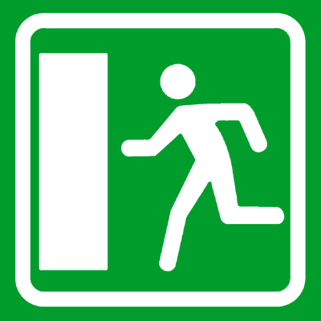
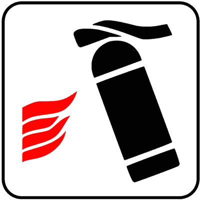

الباب 21: حوادث السير، التصرفات الواجبة، والطقس الصعب
الدليل الهندسي والتشريعي الكامل للتصرف القانوني الإلزامي عند وقوع حادث مروري (واجب التوقف، حماية مسرح الحادث، إغاثة المصابين، وجريمة الامتناع عن المساعدة)، القواعد الدقيقة لمثلث الخطر المتنقل والسترة العاكسة، والتعامل الآمن مع قوى الطبيعة والمناخ القاسي: الانزلاق المائي (Aquaplaning)، الثلوج والجليد، سلاسل الثلج، غرز العجلات (Infossamento)، الضباب الكثيف، الرياح الجانبية العاتية، ومخاطر وحرائق الأنفاق (Gallerie).
خارج المدن (Strade Extraurbane)
المسافة من المركبة: يوضع المثلث على بعد 50 متراً على الأقل خلف السيارة أو الحمولة المتساقطة على نفس الحارة.
مسافة الرؤية: يجب أن يكون المثلث مرئياً بوضوح للقادمين من مسافة 100 متر على الأقل.
السترة العاكسة (Giubbotto): إلزامية تماماً؛ يجب ارتداؤها قبل النزول من السيارة في أوقات الظلام أو عندما تنعدم الرؤية.
أضواء الطوارئ: يجب تشغيل الأضواء التحذيرية الأربعة (4 frecce) بالإضافة إلى وضع المثلث.
فقدان التماسك والطفو فوق طبقة الماء (Perdita di aderenza)
عند سرعة 90 كم/س مع إطار متآكل (عمق نقشة قليل)، تعجز القنوات المطاطية عن تصريف المياه المتجمعة، فيتشكل 'إسفين مائي' يرفع الإطار عن الأسفلت.
الأثر الفوري: المقود يصبح خفيفاً وفاقداً للاستجابة تماماً، وتفقد الفرامل فعاليتها تماماً.
التصرف السليم: لا تضغط على الفرامل بعنف إطلاقاً! امسك المقود بكلتا يديك بقوة وثبات، وارفع قدمك تدريجياً عن دواسة الوقود حتى تستعيد الإطارات ملامسة الطريق.
التعامل مع تعطل المركبة داخل النفق (Guasto al veicolo)
الإجراءات الفورية:
1) تشغيل أضواء الطوارئ الرباعية (4 frecce) فوراً.
2) محاولة إيصال السيارة إلى خليج التوقف الجانبي (Piazzola di sosta) أو أقصى يمين المسار.
3) إطفاء محرك السيارة لمنع تراكم الغازات السامة والعادم داخل النفق.
4) ارتداء السترة العاكسة والاتصال برقم الطوارئ من كبائن SOS الموجودة على الجدار.
المقارنة البصرية الحاسمة: أجهزة الطوارئ والظروف المناخية المعاكسة
الفروق الدقيقة التي يركز عليها واضع الامتحان الوزاري بين حالات الطقس وسلوكيات الأمان
المثلث vs السترة العاكسة
• المثلث (Triangolo): إلزامي خارج التجمعات السكنية، يوضع على مسافة 50 متراً ويرى من 100 متر.
• السترة (Giubbotto): إلزامية على السائق والركاب عند النزول من المركبة ليلاً أو في ضعف الرؤية على الطرق السريعة وخارج المدن.
الجليد vs الثلوج وسلاسل الثلج
• الجليد (Ghiaccio): أخطر ظاهرة شتوية؛ يقلل التماسك لدرجة الصفر ويزيد مسافة الفرملة حتى 10 أضعاف. يكثر على الجسور وفي الظلال.
• سلاسل الثلج (Catene): تركب على العجلات الدافعة فقط (Ruote motrici) عند وجود طبقة ثلج، والسرعة القصوى معها 50 كم/س.
الضباب الكثيف (Nebbia Fitta)
• عند انخفاض الرؤية عن 50 متراً، تنخفض السرعة القصوى على كافة الطرق إلى 50 كم/س.
• تشغيل كشافات الضباب الأمامية ومصباح الضباب الخلفي الأحمر المفرد (Retronebbia).
• توجيه البصر نحو الخط الجانبي الأبيض لحافة الطريق وتجنب التحديق في الفراغ.
الرياح الجانبية وغرز العجلات
• الرياح (Vento): أشد خطورة على الجسور العالية وعند الخروج من الأنفاق وعلى المركبات العالية والمقطورات.
• الغرز (Infossamento): يحظر الضغط المستمر على البنزين (يزيد الحفر)، بل يوضع رمل/حصى/سجاد تحت العجلة والانطلاق بنعومة بالغيارات العالية.
البطاقات المعرفية المعتمدة لحوادث السير والطقس الصعب
التصرف القانوني الإلزامي عند وقوع حادث مروري
Comportamento obbligatorio in caso di incidente stradaleالواجبات القانونية الفورية التي يفرضها كود السير على كل سائق متورط في حادث: التوقف الفوري، حماية حركة السير لمنع حوادث تصادم تتابعية، وإذا كان هناك مصابون تقديم الإغاثة وعدم تعديل معالم الحادث.
- ✅ يجب التوقف فوراً في جميع الأحوال عند التورط في حادث سير مهما كانت الأضرار المادية بسيطة (In caso di incidente stradale è obbligatorio fermarsi)
- ✅ يجب حماية وتأمين مسرح الحادث وتحذير المركبات القادمة لتجنب وقوع حوادث صدم تتابعية (Salvaguardare la sicurezza della circolazione)
- ✅ إذا كانت هناك إصابات بدنية لأشخاص، يجب تقديم المساعدة للمصابين وطلب الإسعاف 112/118 وتجنب تحريك وتغيير آثار الحادث إلا للضرورة القصوى لإنقاذ الأرواح
- ❌ يجوز للسائق مغادرة مكان الحادث دون التوقف إذا تأكد من وجود كاميرات مراقبة على الطريق ❌
- ❌ إذا لم يكن هناك مصابون وكانت الأضرار طفيفة، يحق للسائق الاستمرار في طريقه دون تبادل البيانات مع الطرف الآخر ❌
- ❌ يلزم السائق بتقديم مبالغ مالية نقدية فورية للمتضرر في موقع الحادث لإسقاط المسؤولية الجنائية ❌
حوادث الصدم الخلفي والتصادم التتابعي المتسلسل
Tamponamento e tamponamento a catenaالأسباب الهندسية والسلوكية لوقوع التصادم الخلفي؛ الناجم بشكل أساسي عن عدم الالتزام بمسافة الأمان، التشتت الذهني واستخدام الهاتف، والسرعة غير المتناسبة مع مدى الرؤية وحالة الطريق.
- ✅ السبب الرئيسي لحوادث الصدم الخلفي هو عدم الحفاظ على مسافة الأمان الكافية بين المركبات (Mancato rispetto della distanza di sicurezza)
- ✅ يحدث التصادم التتابعي المتسلسل غالباً بسبب التشتت أو القيادة بسرعة لا تتناسب مع مدى الرؤية أثناء الضباب الكثيف أو الأمطار الغزيرة
- ✅ عند التوقف الفجائي في طابور أو زحام مفاجئ، يجب تشغيل أضواء الطوارئ الرباعية (4 frecce) لتحذير القادمين من الخلف بسرعة
- ❌ في التصادم التتابعي يعتبر السائق الأول هو المسؤول قانوناً عن تعويض كافة السيارات المصطدمة خلفه ❌
- ❌ يسمح بالاقتراب الشديد من السيارة الأمامية في الأوتوستراد لتقليل مقاومة الهواء وتوفير استهلاك الوقود ❌
- ❌ لا يعتبر استخدام الهاتف بكتابة الرسائل سبباً في حوادث الصدم الخلفي إذا كان السائق يقود ببطء ❌
مثلث الخطر المتنقل (Segnale mobile di pericolo - Triangolo)
Il segnale mobile di pericolo (triangolo retroriflettente)جهاز تحذير إجباري عاكس للضوء يجب حيازته على متن كل مركبة آلية (ما عدا الدراجات النارية ذات العجلتين)؛ يستخدم لتحذير السائقين القادمين من وجود عائق أو حمولة متساقطة.
- ✅ يجب وضعه خارج التجمعات السكنية على بعد 50 متراً على الأقل خلف العائق في نفس الحارة، بحيث يمكن رؤيته من مسافة 100 متر على الأقل (A distanza di almeno 50 metri e visibile a 100 metri)
- ✅ يوضع عند تعطل المركبة على المسار ليلاً، أو نهاراً إذا كانت الرؤية محجوبة بسبب منحنى أو مرتفع، أو عند تساقط حمولة لا يمكن إزاحتها فوراً
- ✅ يوضع على مسافة متر واحد على الأقل من الحافة الخارجية لمسار السير أو باتجاه منتصف الحارة
- ✅ لا يلزم وضعه داخل المدن (Centri abitati) حتى ليلاً، إلا في حالات استثنائية جداً عند سقوط حمولات غير مرئية
- ❌ يجب وضع المثلث دائماً داخل المدن على بعد 10 أمتار خلف السيارة المعطلة ❌
- ❌ يوضع المثلث على سقف السيارة المعطلة ليكون أعلى وأكثر وضوحاً ❌
- ❌ يكفي تشغيل أضواء الطوارئ الأربعة دون الحاجة لوضع المثلث خارج المدن ليلاً ❌
السترة والأحزمة العاكسة للضوء عالية الوضوح
Giubbotto retroriflettente ad alta visibilitàسترة أمان عاكسة للضوء باللون البرتقالي أو الأصفر أو الأحمر الفوسفوري؛ يلزم ارتداؤها من قبل السائق قبل مغادرة السيارة عند التوقف الاضطراري على الطرق السريعة وخارج المدن في أوقات الظلام وضعف الرؤية.
- ✅ يجب على السائق ارتداء السترة العاكسة قبل النزول من المركبة ليلاً أو عندما تنعدم الرؤية خارج التجمعات السكنية وعلى الأوتوستراد (Prima di scendere dal veicolo)
- ✅ يجب ارتداء السترة عند النزول لوضع أو استعادة مثلث الخطر على الطريق خارج المدن
- ✅ يجب أن تكون السترة معتمدة ومطابقة للمواصفات وتحمل علامة المطابقة الأوروبية (CE)
- ✅ يلزم ارتداؤها أيضاً من قبل أي راكب يترجل من السيارة ليلاً على الأوتوستراد أو الطرق السريعة
- ❌ يجب الاحتفاظ بالسترة العاكسة داخل صندوق الأمتعة الخلفي (Bagagliaio) تحت إطار الطوارئ ❌
- ❌ يكفي ارتداء ملابس بيضاء عادية كبديل قانوني عن السترة العاكسة ❌
- ❌ السترة العاكسة ملزمة فقط لسائقي الشاحنات الثقيلة ولا تنطبق على سائقي السيارات الخاصة ❌
ظاهرة الانزلاق المائي وانعدام التماسك (Aquaplaning)
Il fenomeno dell'aquaplaning e la perdita di controlloانفصال تام بين مداس الإطار وسطح الطريق نتيجة عجز قنوات التصريف المطاطية عن تفريغ المياه المتراكمة عند السرعات العالية، مما يجعل السيارة تطفو كالقارب وتفقد التوجيه والفرامل.
- ✅ ظاهرة الانزلاق المائي تجعل الإطار يطفو فوق طبقة من الماء وتلغي تماسك المركبة بالشارع (Il pneumatico galleggia su uno strato d'acqua)
- ✅ تزداد احتمالية حدوث الانزلاق المائي مع زيادة السرعة، تآكل نقشة الإطار، وسماكة طبقة المياه على الأسفلت
- ✅ المركبات الأخف وزناً (Più leggere) تكون أكثر عرضة للانزلاق المائي عند نفس السرعة مقارنة بالمركبات الثقيلة (I veicoli più leggeri slittano più facilmente)
- ✅ عند حدوث الانزلاق المائي يصبح المقود خفيفاً جداً وبلا مقاومة، ويجب تجنب الفرملة المفاجئة والإمساك بالمقود بإحكام ورفع القدم عن دواسة الوقود تدريجياً
- ❌ تحدث ظاهرة الانزلاق المائي فقط للسيارات ذات الدفع الرباعي 4x4 ❌
- ❌ تزداد خطورة الانزلاق المائي كلما كانت السيارة أثقل وزناً وأكبر حجماً ❌
- ❌ عند الشعور بالانزلاق المائي يجب الضغط على دواسة الفرامل بأقصى قوة فوراً ❌
القيادة أثناء هطول الأمطار الغزيرة وخطر الطين الرطب
Guida in caso di pioggia intensa e fondo viscidoالمخاطر المترتبة على هطول المطر؛ وبخاصة في اللحظات الأولى لسقوطه عندما يمتزج الماء بالغبار والزيوت مكوناً طبقة زلقة للغاية، بالإضافة لانخفاض مدى الرؤية وتشكل البخار على الزجاج.
- ✅ تكون الطريق شديدة الانزلاق في اللحظات الأولى لبدء هطول الأمطار بسبب اختلاط الماء بالغبار وبقايا الزيوت على الأسفلت (All'inizio della pioggia l'asfalto è particolarmente viscido)
- ✅ يجب زيادة مسافة الأمان بشكل ملحوظ لأن مسافة الفرملة تتضاعف على الطريق المبتل
- ✅ يجب تشغيل الأضواء المنخفضة (Anabbaglianti) ومساحات الزجاج وتفعيل جهاز إزالة الضباب والتدفئة لمنع تكثف البخار على الزجاج الداخلي
- ✅ تنخفض السرعة القصوى المسموحة على الأوتوستراد إلى 110 كم/س (بدلاً من 130) وعلى الطرق السريعة إلى 90 كم/س (بدلاً من 110)
- ❌ يسمح باستخدام الأضواء العالية (Abbaglianti) في المطر الكثيف لأنها تخترق قطرات الماء ❌
- ❌ لا تتأثر مسافة الأمان بالمطر إذا كانت السيارة مجهزة بنظام منع انغلاق المكابح ABS ❌
- ❌ يجب السير بمحاذاة الشاحنات الكبيرة تماماً للاستفادة من حاجز الصد المائي الذي تحدثه ❌
القيادة على الطرق المكسوة بالجليد (Strada ghiacciata)
Guida su tratti di strada con ghiaccioأخطر ظروف القيادة على الإطلاق؛ حيث ينعدم التماسك تقريباً وتزداد مسافة الفرملة حتى 10 أضعاف المسافة المعتادة. يتشكل الجليد بكثرة على الجسور وفي المناطق المظللة وعند مخارج الأنفاق.
- ✅ على الطرق المغطاة بالجليد، يمكن أن تزيد مسافة التوقف والفرملة حتى عشرة أضعاف مقارنة بالطريق الجاف (La distanza di frenatura può aumentare fino a dieci volte)
- ✅ يزداد احتمال تشكل الجليد في المقاطع المظللة، على الجسور المعلقة (Ponti e viadotti)، وعند مخارج الأنفاق وفي الصباح الباكر
- ✅ يجب القيادة بحذر شديد وبسرعة بطيئة، وتجنب الفرملة المفاجئة أو الضغط الحاد على التسارع أو التوجيه الحاد للمقود
- ✅ يجب استخدام الغيارات العكسية لمحرك السيارة (Freno motore) للتهدئة بدلاً من الفرامل الميكانيكية
- ❌ يمكن القيادة بالسرعة القصوى المعتادة على الجليد إذا كانت السيارة مجهزة بإطارات صيفية جديدة ❌
- ❌ نظام ABS يلغي تماماً خطر التزحلق على الجليد ويوقف السيارة في نفس مسافة الأسفلت الجاف ❌
- ❌ تشكل الجليد يكون أقل احتمالاً فوق الجسور مقارنة بالأرض الترابية ❌
القيادة في الثلوج وسلاسل الثلج والإطارات الشتوية
Guida con neve, catene da neve e pneumatici invernaliالقواعد المنظمة للقيادة الشتوية؛ استخدام سلاسل الثلج المعدنية أو الإطارات الشتوية المعتمدة (علامة M+S / رقاقة الثلج) من 15 نوفمبر حتى 15 أبريل في المناطق الإلزامية.
- ✅ يجب تركيب سلاسل الثلج على الأقل على عجلات المحور الدافع (Ruote motrici) للمركبة (Almeno sulle ruote motrici)
- ✅ السرعة القصوى المسموحة عند القيادة مع تركيب سلاسل الثلج المعدنية هي 50 كم/ساعة (Velocità non superiore a 50 km/h)
- ✅ الإطارات الشتوية المعتمدة (المميزة برمز M+S) تعتبر بديلاً قانونياً مكافئاً لسلاسل الثلج المعدنية
- ✅ عند الانطلاق على الثلج، يفضل الانطلاق برفق شديد ويمكن استخدام الغيار الثاني لتفادي دوران العجلات في الفراغ
- ❌ يجب تركيب سلاسل الثلج على العجلات الأربع حتى لو كانت السيارة ذات دفع ثنائي أمامي ❌
- ❌ يسمح بالسير بسرعة 90 كم/س مع سلاسل الثلج على الطرق الخارجية السريعة ❌
- ❌ يجب تفريغ الهواء من الإطارات إلى النصف عند القيادة في الثلج لتحسين السير ❌
غرز العجلات في الثلج أو الطين أو الرمال (Infossamento)
Infossamento delle ruote motrici e disincaglioحالة احتجاز وغرز العجلات الدافعة في أرض رخوة من الثلج أو الرمال أو الطين، وما يترتب عليها من دوران العجلات على الفراغ (Slittamento) بدون حركة.
- ✅ إذا علقت العجلات الدافعة في الثلج أو الرمال، فإن الضغط الشديد والمستمر على دواسة الوقود يؤدي إلى زيادة حفر التربة وغرز المركبة أكثر (Fa scavare ancora di più le ruote)
- ✅ للخروج من حالة الغرز، يجب محاولة الانطلاق بسلاسة ونعومة بالتعشيقة الثانية (Seconda marcia)
- ✅ يساعد وضع مواد صلبة أو خشنة أمام العجلات الدافعة (مثل الرمل، الحصى، أغصان الشجر، أو دواسات أرضية السيارة) على استعادة التماسك والخروج
- ✅ يمكن محاولة تحريك المركبة بحركة تأرجحية ترددية طفيفة للأمام والخلف (Oscillazione) بالتناوب بين التعشيقة الأولى والرجوع للخلف
- ❌ يجب الضغط على دواسة الوقود بأقصى عزم ممكن حتى ترتفع حرارة الإطار فيذوب الثلج ويتحرر ❌
- ❌ يجب فك حزام الأمان والوقوف على غطاء محرك السيارة أثناء الضغط على دواسة الوقود ❌
- ❌ الحل الوحيد للغرز هو سحب السيارة بشاحنة ونش عسكرية فقط ❌
القيادة في الضباب الكثيف وكشافات الضباب (Nebbia fitta)
Circolazione in presenza di nebbia fitta e fari retronebbiaإجراءات السلامة عند هبوط الضباب الكثيف وتدني الرؤية؛ حدود السرعة، الأضواء المسموحة والمحظورة، واستخدام كشاف الضباب الخلفي الأحمر.
- ✅ عندما يقل مدى الرؤية عن 50 متراً بسبب الضباب الكثيف، يحدد الحد الأقصى للسرعة بـ 50 كم/ساعة على كافة أنواع الطرق بما فيها الأوتوستراد (Limite di 50 km/h con visibilità sotto i 50 metri)
- ✅ يجب استخدام الأضواء المنخفضة (Anabbaglianti) أو كشافات الضباب الأمامية المخصصة، ويحظر تماماً استخدام الأضواء العالية (Abbaglianti) لأنها تحدث انعكاساً ضوئياً يبهر السائق كالجدار الأبيض
- ✅ يجب تشغيل مصباح الضباب الخلفي الأحمر (Luce posteriore per nebbia - Retronebbia) فقط إذا كانت الرؤية أقل من 50 متراً لتنبيه القادمين من الخلف
- ✅ يجب توجيه النظر نحو الخط الأبيض المرسوم على الحافة اليمنى للطريق كدليل إرشادي للبقاء داخل المسار
- ❌ يجب تشغيل الضوء العالي Abbaglianti لأنه يخترق الضباب لمسافة أطول ❌
- ❌ يجب السير بمحاذاة السيارة الأمامية تماماً بمسافة مترين للاستدلال بأضوائها ❌
- ❌ يجب التوقف في منتصف المسار وإطفاء الأنوار وانتظار زوال الضباب ❌
الرياح الجانبية القوية والمناطق المكشوفة (Forte vento laterale)
Raffica di forte vento laterale e instabilità del veicoloتأثير الرياح العرضية المفاجئة على اتزان المركبة، خاصة عند الخروج من الأنفاق، فوق الجسور الشاهقة، وعند تجاوز مركبات النقل الكبيرة أو الحافلات.
- ✅ تكون عواصف الرياح الجانبية أكثر خطورة على الجسور العالية (Viadotti)، عند مخارج الأنفاق، وفي المناطق الجبلية المكشوفة
- ✅ تتأثر بالرياح بشدة المركبات ذات الأسطح الجانبية العريضة كالحافلات والقوافل (Caravan) والشاحنات والسيارات التي تسحب مقطورات
- ✅ عند تجاوز شاحنة ضخمة في يوم عاصف، يحدث اضطراب هوائي حاد (انخفاض ضغط هوائي أثناء الموازاة يعقبه اندفاع هواء قوي عند مقدمة الشاحنة)
- ✅ يجب خفض السرعة وإحكام القبض على مقود السيارة بكلتا اليدين والاستعداد لتصحيح مسار التوجيه فوراً
- ❌ الرياح الجانبية تؤثر فقط على الدراجات الهوائية ولا تشكل أي خطر على السيارات ❌
- ❌ لتفادي الرياح الجانبية يجب زيادة السرعة إلى الحد الأقصى للمرور بسرعة من المنطقة العاصفة ❌
- ❌ السيارات التي تجر مقطورة تكون أكثر ثباتاً في الرياح مقارنة بالسيارات المنفردة ❌

لوحة مخرج الطوارئ ومسار الهروب في النفق (Via di fuga in galleria)
Pannello indicatore di via di fuga o uscita di emergenza (Figura 334)لوحة خضراء مدمجة توضع على جدران الأنفاق، توضح اتجاه والمسافة المتبقية للوصول إلى أقرب مخرج طوارئ آمن أو باب هروب مقاوم للدخان والنيران.
- ✅ تشير اللوحة الموضوعة داخل النفق إلى وجود مخرج طوارئ أو مسار هروب آمن في حال وقوع حادث أو حريق (Indica la presenza di una via di fuga o uscita di emergenza)
- ✅ تبين اللوحة المسافة المتبقية بالأمتار (مثلاً 100m أو 150m) واتجاه السهم المؤدي لأقرب باب نجاة (Indica la distanza in metri dall'uscita di sicurezza)
- ✅ في حال اندلاع حريق داخل النفق وتصاعد الدخان، يجب اتباع إشارات هذه اللوحة للخروج سيراً على الأقدام نحو المنطقة الآمنة
- ❌ تلزم هذه اللوحة السائق بالدوران للخلف والعودة لمدخل النفق بالسيارة ❌
- ❌ تشير إلى وجود هاتف عمومي للاتصال بالأصدقاء والعائلة ❌
- ❌ تشير إلى أن النفق مخصص حصرياً للمشاة ويمنع دخول السيارات ❌

لوحة كابينة الطوارئ ومطفأة الحريق في النفق (SOS ed Estintore)
Pannello per cabina di soccorso ed estintore in galleria (Figura 335)لوحة إرشادية داخل النفق توضح موقع كابينة الإغاثة المجهزة بهاتف طوارئ SOS متصل مباشرة بغرفة التحكم، ومطفأة حريق يدوية للتعامل مع بدايات الحرائق.
- ✅ تشير اللوحة داخل النفق إلى وجود كابينة نجدة مجهزة بهاتف طوارئ ومطفأة حرائق (Indica una cabina SOS dotata di estintore)
- ✅ تتيح استخدام هاتف الطوارئ للتواصل الفوري المباشر مع خدمات الإنقاذ وأجهزة تشغيل النفق
- ✅ تتيح الوصول السريع لمطفأة الحريق لإخماد شرارات الحريق الأولية في المركبات قبل انتشار ألسنة اللهب
- ❌ تشير اللوحة إلى وجود محطة وقود داخل النفق لتموين السيارات ❌
- ❌ تشير إلى متجر لبيع مستلزمات الرحلات والتخييم ❌
- ❌ تتيح للمسافرين التوقف لأخذ قسط من الراحة وتناول الطعام ❌
صعود ونزول الركاب وفتح الأبواب الآمن (Salita e discesa passeggeri)
Apertura delle portiere e discesa dei passeggeriالقواعد الصارمة التي تضمن عدم تسبب صعود أو نزول الركاب أو فتح الأبواب في خطر على المشاة والدراجات النارية والسيارات العابرة.
- ✅ يحظر فتح أبواب المركبة أو النزول منها دون التأكد التام من أن ذلك لا يشكل خطراً أو إعاقة لمستخدمي الطريق الآخرين (Prima di aprire le portiere occorre assicurarsi che non costituisca pericolo)
- ✅ يجب مراقبة المرآة العاكسة والالتفات بالرأس للتحقق من عدم قدوم دراجات هوائية أو نارية من الخلف قبل فتح الباب (Dooring danger)
- ✅ يجب أن يتم نزول وصعود الركاب من جهة الرصيف (Lato del marciapiede) كلما كان ذلك متاحاً، خاصة للأطفال
- ✅ يحظر النزول من المركبة أو ترك الأبواب مفتوحة أثناء السير أو أثناء التوقف المؤقت في إشارة المرور
- ❌ يجوز فتح الباب ناحية حركة السير فجأة دون النظر في المرآة إذا كانت السيارة متوقفة ❌
- ❌ يسمح للأطفال بالنزول من السيارة من الجهة المواجهة للشارع في الطرق المزدحمة ❌
- ❌ لا يعتبر فتح الباب في وجه دراجة هوائية مخالفة مرورية إذا كان سائق الدراجة لا يرتدي خوذة ❌
قاموس المصطلحات الإيطالية لحوادث السير والطوارئ والمناخ
أخطر 12 فخاً وزارياً في الباب 21 يقع فيها الطلاب
"Il segnale mobile di pericolo deve essere obbligatoriamente posto nei centri abitati dietro al veicolo fermo per guasto"
«يجب وجوباً وضع مثلث الخطر المتنقل داخل التجمعات السكنية خلف المركبة المتعطلة»
"Il fenomeno dell'aquaplaning si verifica più facilmente nei veicoli più pesanti rispetto a quelli leggeri"
«تحدث ظاهرة الانزلاق المائي بسهولة أكبر في المركبات الثقيلة مقارنة بالمركبات الخفيفة»
"In caso di nebbia fitta, è consigliabile accendere i proiettori abbaglianti per migliorare la visibilità in profondità"
«في حالة الضباب الكثيف، ينصح بتشغيل الأضواء العالية (Abbaglianti) لتحسين مدى الرؤية في العمق»
"Fuori dei centri abitati, il segnale mobile di pericolo deve essere collocato ad almeno 50 metri dal veicolo fermo"
«خارج التجمعات السكنية، يجب وضع مثلث الخطر المتنقل على بعد 50 متراً على الأقل من المركبة المتوقفة»
"Il giubbotto retroriflettente deve essere obbligatoriamente custodito nel bagagliaio del veicolo"
«يجب وجوباً الاحتفاظ بالسترة العاكسة داخل صندوق الأمتعة الخلفي للمركبة»
"In caso di infossamento delle ruote nella neve, bisogna accelerare al massimo con la prima marcia per liberare rapidamente l'auto"
«عند غرز العجلات في الثلج، يجب الضغط على الوقود بأقصى عزم بالتعشيقة الأولى لتحرير السيارة بسرعة»
"In caso di precipitazioni atmosferiche (pioggia), il limite massimo di velocità scende a 110 km/h in autostrada"
«في حالة هطول الأمطار، ينخفض الحد الأقصى للسرعة على الأوتوستراد إلى 110 كم/س»
"Quando si circola con le catene da neve montate, non si può superare la velocità di 70 km/h"
«عند القيادة مع تركيب سلاسل الثلج، لا يجوز تجاوز سرعة 70 كم/س»
"Il pannello posto all'interno di una galleria (Fig. 334) indica la presenza e la distanza di una via di fuga o uscita di emergenza"
«اللوحة الموضوعة داخل النفق (شكل 334) تشير إلى وجود ومسافة مخرج طوارئ أو مسار هروب»
"Il pannello in figura 334 obbliga il conducente a tornare indietro con l'autoveicolo all'imbocco della galleria"
«تلزم اللوحة في الشكل 334 السائق بالعودة بالمركبة إلى مدخل النفق»
"In caso di incendio in galleria, bisogna chiudere l'auto a chiave e portare con sé la chiave per sicurezza"
«في حالة نشوب حريق بالنفق، يجب إغلاق السيارة بالمفتاح وأخذ المفاتيح معك لضمان الأمان»
"Sui ponti e viadotti la formazione di ghiaccio sulla carreggiata è più probabile rispetto ad altri tratti di strada"
«فوق الجسور والكباري العالية يكون تشكل الجليد على مسار الطريق أكثر احتمالاً مقارنة بالمقاطع الأخرى»